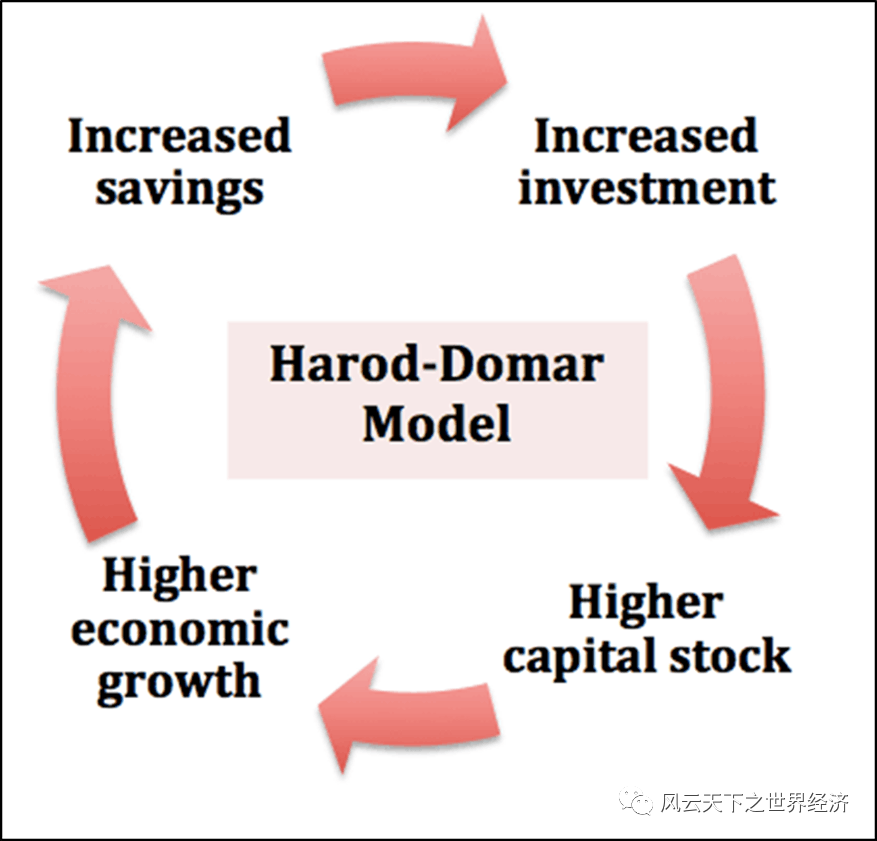
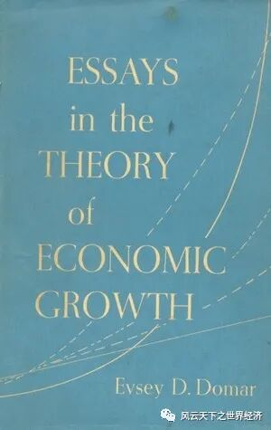

能够做到一个公式和符号都不用而能把增长理论说清楚，我用了二十年时间。头十年一直在学习数学，然后用后十年把这些知识忘掉。
1. 让人念念不忘的错误理论
1957年，MIT经济学系教授埃弗塞·多马（Evsey D. Domar）将自己学术生涯中关于经济增长的论述结集出版，并取名为《Essays in the Theory of Economic Growth》，其中当然包括那篇让他声名鹊起的论文——《资本扩张、经济增长率与就业》。尽管在文章的开头多马教授一再声明他研究的是资本积累和就业的关系，但这丝毫没有妨碍该文与1939年哈罗德的另外一篇相似的论文并称为“哈罗德-多马模型”，成为现代增长理论的开山之作。但是如此的影响力并没有带给多马教授多少快乐。在该书的前言中，作者坦诚他在过去的11年饱受良心的谴责（but with an ever-guilty conscience），因为对增长这个严肃命题过于草率的解读，让理论和现实中的精英在错误的道路上越走越远。
多马教授和哈罗德教授
教科书里一直把多马教授的论文当做凯恩斯静态理论的动态化拓展，至少从外观上看，它和凯恩斯的模型长得像极了。凯恩斯用他的乘数理论强调投资对总需求的影响，而多马则通过其资本积累方程发现了投资支出是如何提高一个经济体生产能力（总供给）的。
这篇论文的错误在第一部分就已经展露无遗，就像所有的经济学模型一样，多马教授的增长模型从一系列假定开始：
- 固定的资本劳动比率，也就是说一个工人只能使用固定数量的资本；通过这一假定，哈罗德多马模型成功地将“技术进步”排除在增长源泉的候选之列；
- 固定的资本产出比率，此举意味着每创造一块钱的财富所需要的资本是固定的;
- 固定不变的人口增长率，这个在经济史上从来未出现的情况足以说明多马先生在研究中是多么的大胆。
这三个不切实际的假设让多马模型看上去清新脱俗，如飞燕般掌上起舞。这可能也是让它变得如此流行的原因，但是你很快可以发现，这样的简约之美如何酿成了弥天大错。
经过一系列不算复杂的推导，模型很快可以告诉我们，一个国家经济增长最终决定于该国的储蓄率——只要有着足够的储蓄，一个国家就可以走上永续增长之路。这让每个国家孜孜以求而不得的财富故事简单得像个小学低年级数学题：如果一个国家想要人们的生活水平在35年后翻一番，那么就需要使人均收入获得每年2%的增长率；如果人口以2%的速度增长，如此一来，经济总量的增长的目标值需要设定在4%才能达成所愿。如果假定创造一块钱的财富需要4块钱的资本（资本收入比为4），那就意味着国民每年需要将GDP的16%用于储蓄才能够实现。如果做不到，说明这个国家存在着“储蓄缺口”。

极简版哈罗德多马模型
填补储蓄缺口有两个显而易见的途径，鼓励国民少消费多储蓄，或者通过外债和国际援助弥补国内储蓄的不足。如果前者由于国民的消费路径依赖而一时难以改变，那么政府的财政政策可以扮演至关重要角色，发展中国家的高税率或许是以此为理论基础的。当然，如果私人储蓄的想象空间不大的话，向发达国家“化缘”成了不二的选择。这看似是个更加难以完成的任务，但是如果你了解冷战时代的国际形势，便会知道当时国际投资援助的获取成本低的惊人。
多马先生的错误理论生在了正确的时代。
以巴格瓦蒂、伊斯特利为代表的一众经济学家很快便发现了多马模型的理论缺陷，其中最尖锐的批评则是来自后来因为增长理论荣膺诺奖的罗伯特·索洛。在颁奖典礼的致辞中，索洛毫不掩饰对多马模型的失望之情——“想要在哈罗德多马框架中取得稳定的增长如同等待‘幸运之神奇迹般的降临’”，“在这样的假定下，经济增长将会如‘在刀刃上行走’一般”。
其实在索洛演讲的30年前，在《经济增长理论文集》这本书的前言中，多马教授就已经向索洛模型俯首称臣。“罗伯特-索洛（Robert M. Solow）最近发表的一篇文章表明，通过使用一个不是很复杂但不那么僵硬的生产函数，可以丰富增长模型的内容。”

多马教授1957年出版的《经济增长理论文集》
是什么让多马教授错得如此离谱？或许还是因为那个时代。他们的研究处在大萧条刚刚过去的时代，因此假定资本劳动的比率固定显得并不那么匪夷所思。在他们的认知里，满眼都是“追逐机器”的失业人群，在这种情况下，只要增加机器投资，总有工人会填补工作，因此资本的边际产出永远不会递减。因为他们的一生几乎都没有见过所谓的“产能过剩”，悲剧的种子就此埋下。所以说，每个人都是自己所处时代的奴隶，经济学家也不例外。
尽管如此，20世纪增长理论的研究热潮还在这个错误的理论的引导下掀开了一角。
2. 从未发生的沃尔特奇迹
多马教授的声明以及其他经济学家的批评让他的增长理论逐渐淡出了经济学教科书。但是，在现实世界里，他的影响远未结束，直到今天，很多人依然践行着哈罗德多马的结论，笃信高投资率是实现经济长期可持续增长的发动机。
二战之后非洲国家独立的风潮更是为“投资增长论”提供了理想的试验场。
沃尔特河，西非第二大河，先后流经布基纳法索、多哥、贝宁、马里和科特迪瓦，在奔腾1600公里后经由加纳汇入大西洋。千万年来流淌的贫瘠在此时激荡出些许希望的白浪。
1957年3月6日午夜时分，非洲首个独立国家加纳的首任总统夸梅·恩克鲁玛在十二点的钟声中宣布：加纳从此自由了！从人群中爆发出的欢呼声穿透夜色，响彻这片千百年来被贫穷笼罩的土地。
在首都阿克拉市的中心，高高耸立的拱门上镌刻这个新生国度的独立宣言——“公元1957，自由与正义”，这些文字的意义并非仅仅是呼应新生的红、黄、绿三色国旗。恩科鲁玛明白，只有当他的人民有足够的食物、健康的身体、有遮挡风雨的住所、而且有能力读写，这个国家才算真正拥有了自由与正义。
加纳首都的自由与正义之门
在声势浩大的独立庆典中，来自英国的发展经济学家阿瑟·刘易斯并不十分惹眼，可能是因为他与当地人一样的肤色。但是，他却承载着这个新生国家富强的使命，正是接受了恩克鲁玛的邀请，他才雄心勃勃地踏上了这片充满未知同时也被寄予无限希望的土地。
除刘易斯以外，一批经济学家都先后成为恩克鲁玛总统的座上宾。尼古拉斯·卡尔多、达德利·西尔斯、阿尔贝托·赫希曼和托尼·基立克。他们为总统先生带来的则是经济学界最热门的“投资增长理论”。西尔斯写道：“铺设从塔克瓦到塔克拉地的公路将大大促进加纳经济增长，这一回报将远远高于在英国修建一条同样的道路。”
他们的雄心有着充分的理由：这片被美丽的沃尔特河滋养的24万平方公里土地出产了世界上2/3的可可；干燥的地表下蕴藏的黄金超过20亿盎司，如果按每年开采270万盎司来计算，可连续开采740年；曾经的宗主国英国在这里建设了非洲最好的学校……
一个作家在加纳独立日后发出这样的感叹——几乎没有一个前殖民地获得如此幸运的新生。
让恩克鲁玛兴奋不已的除了这些经济学家带来的智慧以外，还有来自华盛顿和莫斯科的代表，他们为加纳带来了源源不断的贷款和技术援助。
资本、技术、思想还有勤劳勇敢的子民，哈罗德多马模型中提到和未提到的所有增长要素此刻齐聚加纳，一个富强国度的新生似乎只差时间而已。
工业化首先要解决电力的问题，为此恩克鲁玛计划在沃尔特河上修筑一个水电站，阿可桑布大坝就是为此而兴建的，水电站将会为附近的铝厂提供充足的电能，而铝厂所需要的原材料则来自该国丰富的铝土矿藏。新铝厂所生产的铝材将成为机械厂的原料，铁路和苏打工厂将会把这个产业链条继续延伸下去。工业化成为饱受贫困之苦的人民对于国富民强的全部想象，用恩克鲁玛的话说：“当工厂排放出来的浓烟让子民无法看到沃尔特河的对岸时，这些人才是真正的幸福”。
为工业而建的大坝成就了世界上最大的人工湖之一——沃尔特湖。它可以贯通加纳的南北交通，沿水库而建的工厂将会获得低成本的水上交通，运输成本大大节约。这一项目同时还将成就新型渔业的发展，丰沛的湖水可以灌溉周围数以千里的农田。
为了这个宏伟的计划，3500平方公里的土地将会变成泽国，8万居民要踏上离乡之路，他们的家园将会成为沃尔特水库的一部分。但是，在恩克鲁玛看来，这些付出都是值得的。
1964年5月19日，恩克鲁玛为大坝落成剪彩，沃尔特河等待奇迹上演。
沃尔特河上的阿可桑布大坝
但是，加纳人民最终等来的是失望。如今的加纳几乎还和70年前一样贫困。大坝、发电厂和铝厂依次建了起来，但是冶炼厂、苏打厂、铁路却依然如戈多般久久未至，渔业梦想也“因为糟糕的管理和机械故障而破灭”。沃尔特湖周围的生态遭到严重破坏，8万搬迁居民记忆中的家园沉入湖底，但是他们的后代却饱受河盲症、十二指肠病、疟疾和血吸虫病的折磨；阿可桑布大坝依然雄伟如初，但是大规模的灌溉工程以及便捷的南北交通最终只停留在加纳人民的梦想里。
1966年，加纳梦想的总设计师——恩科鲁玛总统在一次军事政变中被赶下了台。9年前的盛典再次在阿克拉市上演，而这一次的主题是为了庆祝曾经的民族英雄悲情谢幕，因为恩克鲁玛的万丈雄心为加纳人民带来的只是食物短缺和飞涨的物价而已。
曾经志存高远的经济学家在几年之后悻悻而归。但是，这不妨碍此后源源不断的国际援助被送往非洲，哈罗德多马的投资信条被一遍一遍地重复，那个关于经济起飞的谜题却一直未能被正确的求解。
在本主题推文的下篇中，经济增长理论将迎来它成长的后两个阶段，分别叫做“无用的投资”以及“像诗歌一样有用的内生增长理论”，敬请期待......